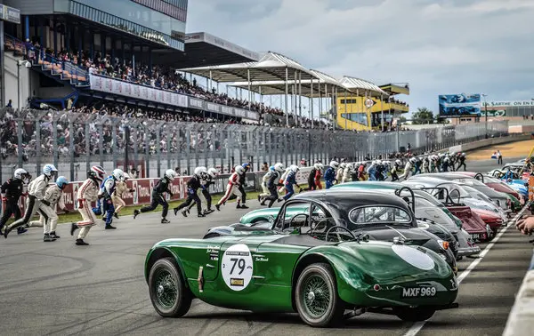

Le Mans 24 Órás
A Le Mans 24 órás verseny a világ egyik leghíresebb és legkeményebb autósport eseménye. Az első versenyt 1923-ban rendezték meg, és azóta is a kitartás és a technológiai fejlesztések csúcsát képviseli.
A verseny célja, hogy az autók a lehető legtöbb kört tegyék meg 24 óra alatt. A Le Mans pálya, amely részben közutakon halad, különleges kihívást jelent a versenyzők és a csapatok számára. Az évek során számos ikonikus pillanat és versenyző született itt.

Az elmúlt 10 év bajnokai
| Év |
Versenyző |
Csapat |
Nemzetiség |
| 2023 |
Brendon Hartley |
Toyota |
Új-Zéland |
| 2022 |
Kazuki Nakajima |
Toyota |
Japán |
| 2021 |
Kévin Estre |
Porsche |
Francia |
| 2020 |
Sébastien Buemi |
Toyota |
Svájc |
| 2019 |
Fernando Alonso |
Toyota |
Spanyol |
| 2018 |
Kazuki Nakajima |
Toyota |
Japán |
| 2017 |
André Lotterer |
Porsche |
Német |
| 2016 |
Marc Lieb |
Porsche |
Német |
| 2015 |
Nico Hülkenberg |
Porsche |
Német |
| 2014 |
Marcel Fässler |
Audi |
Svájc |
Híres versenyzők
Tom Kristensen
Tom Kristensen dán versenyző, aki kilencszer nyerte meg a Le Mans 24 órás versenyt, ezzel ő a rekordtartó. Az Audi csapat színeiben érte el legtöbb győzelmét, és neve örökre összefonódott a versennyel.

Jacky Ickx
Jacky Ickx belga versenyző, aki hatszor nyerte meg a Le Mans 24 órás versenyt. Karrierje során számos különböző autóval és csapattal versenyzett, és jelentős hatással volt a sportágra.
Fernando Alonso
Fernando Alonso spanyol versenyző, aki kétszer nyerte meg a Le Mans 24 órás versenyt a Toyota csapat színeiben. Alonso sikeres Forma 1-es karrierje után is kimagasló teljesítményt nyújtott a hosszútávú versenyzés világában.
Az aszfalt királyai
Az aszfalt királyai (eredeti cím: Ford v Ferrari) 2019-ben bemutatott amerikai életrajzi-dráma, melyet James Mangold rendezett Jez Butterworth, John-Henry Butterworth és Jason Keller forgatókönyvéből. A szereplők Matt Damon, Christian Bale, Caitríona Balfe, Jon Bernthal, Tracy Letts, Josh Lucas, Noah Jupe, Remo Girone és Ray McKinnon
Az Amerikai Egyesült Államokban 2019. november 15-én mutatták be, míg Magyarországon egy nappal hamarabb szinkronizálva, november 14-én a Fórum Hungary forgalmazásában. A film világpremierjét a Telluride Filmfesztiválon tartották 2019. augusztus 30-án.
A film pozitív visszajelzéseket kapott a kritikusoktól, akik dicsérték a színészi alakítást és a verseny jeleneteket. A Metacritic oldalán a film értékelése 70% a 100-ból, ami 13 véleményen alapul.[3] A Rotten Tomatoeson az Aszfalt királyai 89%-os minősítést kapott, 47 értékelés alapján.[4]
A film korai szakaszában Tom Cruise és Brad Pitt kapta volna a főszerepet, de ez egyéb okok miatt nem valósult meg. Mangold ezt követően 2018 februárjában Damonnak és Bale-nek adta a főszerepeket, majd a többi szereplő is csatlakozott azon a nyáron. A forgatás 2018 júliusában kezdődött Kaliforniában, és alig több mint két hónapig tartott.
A történet végigköveti az excentrikus, határozott amerikai mérnökök és tervezők csapatát, amelyet Carroll Shelby és brit sofőrje, Ken Miles vezet, akiket Henry Ford II és Lee Iacocca bíz meg azzal a feladattal, hogy egy új versenyautóval, a Ford GT40-nel sikerüljön legyőzni a domináns Ferrari versenycsapatot az 1966-os franciaországi Le Mans 24 órás versenyén.
A film megtörtént események alapján készült.